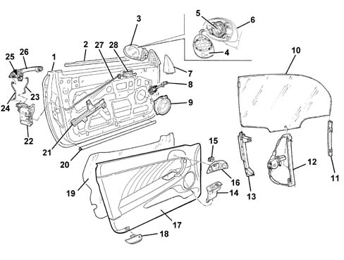

INTRODUCTION - PASSENGER COMPARTMENT FRONT SIDE DOORS
- Path
- Descriptions > 70 FITTINGS > 7005 PASSENGER COMPARTMENT FRONT SIDE DOORS > INTRODUCTION - PASSENGER COMPARTMENT FRONT SIDE DOORS
- Kind
- system description
- Applies to
- engines: 2.0 JTS, 3.2 V6, 1.9 JTD 16V; all production periods
- Interactive page
- https://sloeber94.github.io/elrnDB-aGt/en/#/125000424
Applies to: engines: 2.0 JTS, 3.2 V6, 1.9 JTD 16V; all production periods
SPECIFCATIONS
The front doors have been designed with the structure and the panels not featuring any corners to reduce the risk of injury to the occupants.
The locks and control levers are protected against break ins by a shield which prevents access to the mechanisms from the outside. The safety lock is activated, from inside the vehicle, by means of a switch in the dashboard.
The side panel features an arm-rest made directly out of the panel and an oddments pocket in the lower section and also contains:
- opening/closing handle;
- internal door lever;
- electric controls for opening windows;
- controls for adjusting exterior rear view mirrors (driver's side only);
- oddments pocket;
The lower part of the panel contains:
- two speakers, one of which is housed in the door opening lever trim;
- puddle light;
The sliding glass is made from thermal glass and is moved by means of a mechanism with a guided cable.
COMPOSITION
Exploded view of front door

1- Door structure
2 - Outer glass scraper trim
3 - Exterior rear view mirror
4 - Exterior rear view mirror
5 - Direction motor
6 - Body-matched cover
7 - Angular cover
8 - Door check strap
9 - Front speaker
10 - Lowering window glass
11 - Front window guide
12 - Window opening mechanism
13 - Rear window guide
14 - Electric window switches and control unit
15 - Front tweeter
16 - Interior handle escutchion
17 - Interior panel
18 - Lower courtesy light
19 - Water guard protection
20 - Lower seal
21 - Anti-intrusion bulkhead
22 - Door lock
23 - Handle/lock connecting rod
24 - Barrel/lock connecting rod
25 - Barrel for door key
26 - Exterior handle
27 - Interior handle rod
28 - Interior handle